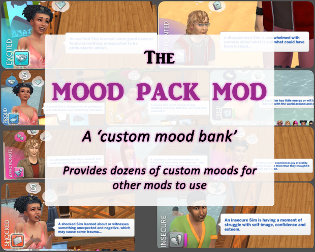

The Mood Pack
心情模組
備用載點 ｜無
所需DLC ｜無
下載版本 ｜v1.677
下載日期 ｜2026.05.18
漢化版本v1.674_Nov2024 兼容 v1.677版本

漢化版本v1.674_Nov2024 兼容 v1.677版本

需下載XML注入器
漢化版本v1.0 兼容 v1.1版本

需下載Lumpinou心情模組、XML注入器
需下載LOT51核心庫
漢化版本v1.9.8 兼容 v1.9.9版本
需下載XML注入器
需下載XML注入器
2種版本請擇一下載
RomanticInteractionAddition
⤷ 小人自主行動版本
RomanticInteractionAddition _NoAutonomous
⤷ 玩家控制版本
需下載XML注入器
漢化版本 兼容 v2版本
如不需要美容功能請刪除 - Slice of Life ♡ Beauty Features資料夾、[KawaiiStacie] Beauty & Fashion Features.ts4script
如不需要酒精功能請刪除 - Slice of Life ♡ Fun Juice Features資料夾、[KawaiiStacie] Fun Juice Features.ts4script
如不需要健康功能請刪除 - Slice of Life ♡ Health Features資料夾、[KawaiiStacie] Health Features.ts4script
如不需要回憶功能請刪除 - Slice of Life ♡ Memories資料夾、KawaiiStacie ♡ My Memories.ts4script
如不需要經期功能請刪除 - Slice of Life ♡ Menstrual Cycle資料夾、[KawaiiStacie] Menstrual Cycle.ts4script
如不需要自我嘿咻功能請刪除 - Slice of Life ♡ Alcohol Features資料夾
如不需要性格功能請刪除 - Slice of Life ♡ Personality資料夾、KawaiiStacie ♡ My Personality.ts4script
如不需要電話簡訊與兔子洞聚會功能請刪除 - Slice of Life ♡ Phone Features資料夾、[KawaiiStacie] Phone Features.ts4script、[KawaiiStacie] Phone UI.ts4script

需下載XML注入器
包含女性化與男性化各 25 種自拍姿勢 (共 50 種)
網頁其他檔案
simkatu_mirrorphoto_posepack_male.package
⤷ 男性化 25 種自拍姿勢
simkatu_mirrorphoto_posepack_female.package
⤷ 女性化 25 種自拍姿勢
simkatu_mirrorphoto_phone.package
⤷ CAS中人物手機配件 (可用其他作者手機代替)
以下檔案擇一下載
simkatu_mirrorphoto_v2_genderneutral.package
⤷ 中性化，自拍姿勢不限性別混用
simkatu_mirrorphoto.package
⤷ 男性與女性自拍姿勢分開
需下載XML注入器
需下載自定義場地
模擬市民4早期職業的進行方式都是兔子洞，這個開放是職業模組將所有早期封閉的成人職業(特務、宇航員、運動員、商業、作家、科技達人、演藝人員、畫家)以及兩個青少年職業（快餐和咖啡師）轉變為開放（可跟隨）職業
需下載Lumpinou心情模組、通用選單
模組主體壓縮檔已包含通用選單在內
( adeepindigo_base_generalpiemenus_v3.package )
CORE.package 和 .ts4script ⇨ 必裝核心檔案
Mesh_Required檔案必須安裝
其他附加檔案 (可根據自己的需求下載 )
Allergies (過敏 )
⤷ 模擬市民會產生過敏
Conditions (環境 )
⤷ 模擬市民會患上慢性病
Emergencies (醫療緊急情況 )
⤷ 闌尾炎、動脈瘤和心臟病現在都包含在醫療緊急情況下
Injuries (受傷 )
⤷ 模擬市民會受到輕微和嚴重的傷害
Gynecology (婦科 )
⤷ 模擬市民會有婦科檢查和婦科問題
Pregnancy (懷孕 )
⤷ 模擬市民能夠參加產前和產後護理，可能發生妊娠併發症，並有產後憂鬱
Medications資料夾
⤷ 不可刪除，藥品檔案。包含 Sandy/ATS 的功能性藥物
Optional Addons資料夾
AJNebula_CochlearImplant_Meshes
⤷ 可穿戴的人工耳蝸；現已作為可穿戴的醫療設備供應
CochlerImplants_Auto
⤷ 自動添加中性顏色的人工耳蝸；模擬市民獲得人工耳蝸時自動添加中性顏色。否則，將根據需要添加任何在CAS中的樣式。
DiabetesGlucoseMonitor
⤷ 糖尿病血糖儀；所有得到糖尿病的病患將會自動獲得血糖儀
DiseaseImmunityChance
⤷ 疾病免疫；模擬市民有機會會獲得疾病免疫的特徵，有此特徵的人物將不會獲得疾病。
OPTIONAL_MedicationReminder
⤷ 藥物提醒功能
ModDeath _GlobalDisabler
⤷ 死亡全局禁用功能；所有的模擬市民不會因為此模組的疾病而死亡
漢化版本v1.91 兼容 v1.96版本
M0_CoreLibrary ⇨ 必裝核心檔案
其餘可根據自己的需求下載
目前僅下載
M5_TeenPregnancy ⇨ 青少年懷孕和反應
M13_Miscarriage&PregnancyLoss ⇨ 流產和流產併發症
M14_Pregnancy&FamilyTweaks ⇨ 懷孕調整
M18_ExpandedWooHoo ⇨ 嘿咻擴展

可將其他家庭的小人加入控制，一次控制多位小人
需下載LOT51核心庫
Fahrenheit為華氏，請依個人習慣擇一下載
需下載LOT51核心庫
bicycle_helmet.jpg)
Fahrenheit為華氏，請依個人習慣擇一下載

滑鼠右鍵即可移除